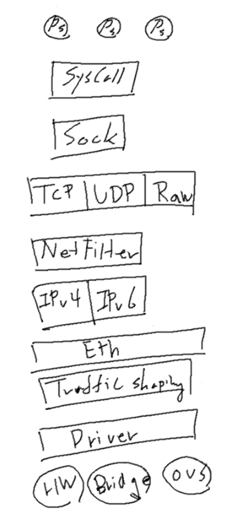
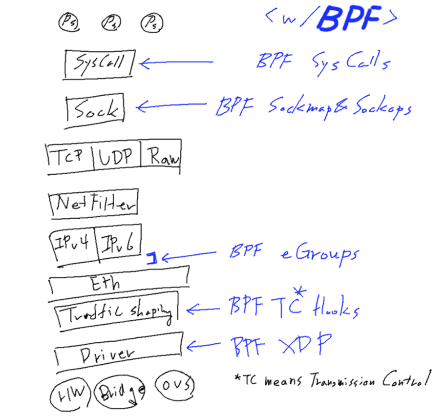
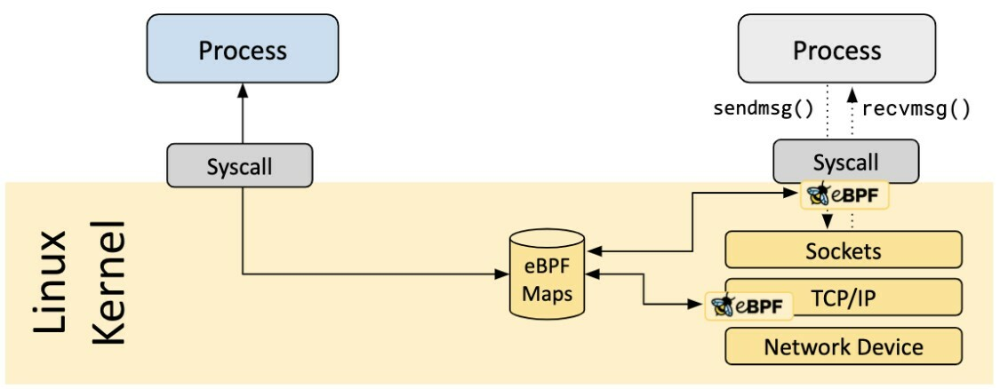
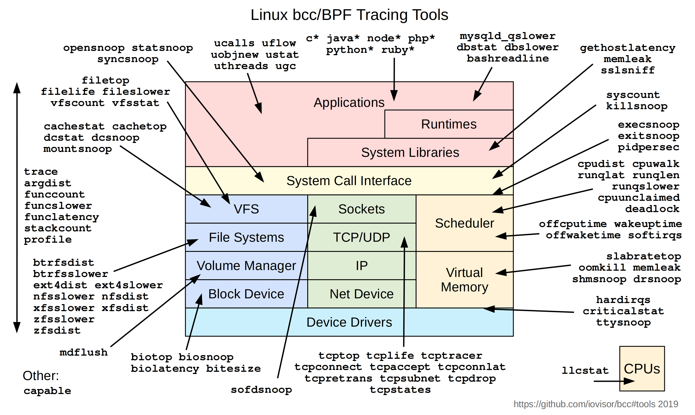

고쳐야할 부분이
너무많아서 나중에 해당 부분만 글을 작성할 예정입니다.
어느덧 이번 스터디도 대망의 Cilium을 다루기 시작합니다.
Cilium에 이렇게도 (저를 포함한) 모?두가 열광하는지 알아보기 전에
근간이 되는 eBPF를 먼저 가볍게 알아보고 가려합니다.
이 때는 설마 했지만, 역시나 스불재 엔딩이었다
CloudNet@에서 진행하고 있는 K8s Advanced Network Study(이하, KANS)를 통해 학습한 내용을 정리합니다.
1. Linux Network Stack
스터디 1주차의 Jenkins 컨테이너에서 Host의 Docker 데몬 사용하기에서 가볍게 맛을 보고 도망치기 바빴지만, 여튼 아래의 사항은 스쳐지나갔습니다.
- iptables: userspace 기반의 네트워킹
ufw, firewalld 등의 방화벽 프로그램이 이를 래핑하였다는 건 대충 넘어간다하더라도,
Linux 환경에서 userspace를 통해 제어를 한다는 것을 알아두었을 때,
이를 네트워킹 스텍으로 사용하고 있는 기존의 방식이 약간이라도 번거롭다는 것을 느낄 수 있습니다.
그 의미는 yaml에 적용하면, 일일히 iptables를 수정하여 사용한다는 의미이기 때문입니다.
이를 또 풀게되면…
- 한번 규칙(rule)을 수정한다고 할때, 재생성=모든 규칙을 업데이트한다.
- Chaning 된 규칙은 연결리스트이기 때문에 모든 동작의 복잡도는 O(n).
- ACLs는 우선순위가 높은 규칙에서 순차적으로 적용됩니다.
- IP 및 포트를 기반으로 하며, L7 프로토콜에 대해서는 지원이 되지 않습니다.
- 새로운 IP 혹은 포트가 추가되면, 규칙은 추가되어야하고 체이닝은 바뀌어야합니다.
즉 그때마다 모든 규칙을 업데이트해야하는 것입니다.
결국 kube-proxy처럼 이를 활용한 Kubernetes에 있어 리소스 오버헤드가 발생한다고, Youtube/FOSDEM2020에 나와있습니다.
- 일반적으로 iptables를 쓰는 것이 kernel 단의 netfilter를 조작하는 익숙한 방식이라 적용하기 효율적이었을 것이라 생각됩니다.

2. BPF(Berkeley Packet Filter) kernel hooks
BPF를 커널에 삽입하여, 패킷을 필터링(통제)할 수 있다고 하는데… 이걸로는 크게 와닿지 않고요.
다른 글에도 tcpdump를 대표적인 사용례로 소개하고 있습니다.
도서출판 인사이트에 따르면, 패킷 필터링을 넘어 고급 성능 분석 도구 등에 이용되는 다양한 분야에 사용가능한 범용 실행 엔진을 일컽는 독립적 기술이라고 하는데, 커널의 내부를 들여다 볼 수 있는 초능력(매직!)을 준다고 합니다.
컴퓨터과학에 초능력이라니, 처음엔 갸웃했는데 Cilium을 보면서 그저 믿는 수밖에 없었죠.

- BPF: A Tour of Program Types
- BPF In Depth: Communicating with Userspace
- bpftune - Using Reinforcement Learning in BPF
위의 포스팅에 자세히 나와있지만, 제가 이해하려고 아래와 같이 끄적였습니다.
- Syscall
userspace map interaction(상호작용)을 수행합니다.
- Sockmap
BPF Map의 한 유형으로 보이며, 소켓을 저장하고 관리하는데 사용되는 것 같습니다.
BPF Map은 BPF 프로그램이 다른 BPF프로그램 및 map 데이터를 볼 수 있는 다른
userspace프로그램으로부터 정보를 얻는 데 쓰인다고 합니다.
더 자세한 것은 The Linux Kernel Docs에서.
- Sockops: also called
TCP-BPFmechanism that support setting TCP parameters.
ops라길래, xops인줄 알았는데operand인 건에 대하여;
한번 찾아보니 좋은 글이 있었습니다. eBPF系列-ebpf map之使用sockmap提升本地socket转发
netdevconf/brakmo-tcpbpf-talk와 병행해서 읽어본 바, 현재 이해한 사항은…
(1) SYN 수신 시 : BPF_SOCK_OPS_ACTIVE_ESTABLISHED_CB 히트
(2) SYN-ACK 수신 시 : BPF_SOCK_OPS_PASSIVE_ESTABLISHED_CB 히트
(3) 이 외에도 RTO 시간을 동적으로 조정가능하다는 것인데, 아래 블로그에 재미나’보이는’ 예시가 있습니다. 언젠가 저 RTO를 왜 조작하는지 이유를 좀 더 알아봤으면 좋겠네요.
Customize TCP initial RTO (retransmission timeout) with BPF
- Cgroups / TC(Transmission Control) Hooks
사실
TC가 트래픽 컨트롤 아닌가,IPv4, IPv6 는 cgroup 이죠?라는 질문을 받고,
뭔가 잘?못 되었다는 생각이 들어서 이 글을 통해 정말 조금만 더 파보기로 했습니다. (또 후회 중)
OpenEuler/eBPF Introduction에 의하면 cgroup의 경우, 당연한 이야기겠지만 Permission 이야기로 생각이 되는데, BPF_PROG_TYPE_CGROUP_DEVICE처럼 쓸 수 있다고 생각되어 집니다.
eunomia/eBPF Tutorial by Example 20: tc Traffic Control에서
tc(traffic control)과 TC(Transmission Control)을 구분하고 있는데,
결국 무엇인지는 아직 헷갈립니다. 전송하는건 똑같으니 그만 좀 생각해볼까
아직은 확신을 하지 못했으므로 아래의 글과 함께 보류해보겠습니다.
Whirl Offload/Understanding tc “direct action” mode for BPF
man7/tc-bpf(8)#DESCRIPTION
당연히 traffic control로 기재야 되어있겠지만, 설명을 읽어보니
(SHAPING) When traffic is shaped, its rate of transmission is under control.
이렇게 적혀있어서, 결국 전송속도 제어이니 둘 다 맞는 말 같기도…?
여튼 shaping은 burst 완화에 도움이 되고, egress 에서 발생한다고 합니다.
- XDP(eXpress Data Path)
Red Hat/Get started with XDP을 보니, 서두부터 learning curve가 심하다고 하는군요. 접을까
하위로 안내된 Red Hat/Achieving high-performance, low-latency networking with XDP: Part I를 살펴봅시다.
XDP 이전의 패킷 처리를 위한 커널 솔루션은 DPDK(Data Plane Development Kit)이라는 bypass 솔루션 대비 10배 이상 성능이 뒤쳐져있었다고 합니다.
하지만 XDP를 통해, 아래의 장점을 포함하여 XDP 지원 드라이버에서 14Mpps 이상을 처리할 수 있다고합니다.
(0) 커널 내 코드 추가 없이 커널 동작 변경 및 확장: ??? 뭐라고?
(1) SKBs(socket buffers) 관리의 오버헤드 제거(?)
(2) 패킷당 메모리 관리 오버헤드 감소
(3) 더 효과적인 대량 처리 가능
음 써놓고도 다시 읽어보니 잘 모르겠네요.
여튼, 커널 내부의 저수준 hook에 BPF(eBPF) 프로그램을 붙일 수 있다고 합니다.
이 hook이 network device driver에 의해 구현되는 시점은
현재(current) 패킷에 소켓 버퍼가 할당되기 전이라고 합니다.
일반적으로 NAPI 방식의 poll()과 같이,
ingress traffic proccessing function(인그레스 트래픽 처리 함수)내부에서 처리된다고 합니다.
와 장황하게 쓰니, 더 모르겠어!
3. eBPF(Extended BPF)
앞의 설명이 장황했는데, 아래의 그림을 조금은 이해할 수 있게 되었습니다. 과연

Source: Is it Observable/How to observe your network with eBPF
앞선 내용에서도 eBPF가 간혹 나오는데 그야 BPF에서 확장된 것이니 기본원리는 같을 수 밖에 없을 것 같습니다.
-
핵심: 커널의 current feature(현재 기능)을 개선 할 수 있음.
- 커널이 소켓 연결이나 다른 프로세스를 관리할 때, KPIs를 수집하는 프로세스를 추가
어째서 KPI를 여기서 보는 것인가
-
활용: 무궁무진
- 네트워킹: 분석, 라우팅 등
- 보안: 특정 규칙에 따라 트래픽 필터링 및 허용/차단 트래픽 보고
- 실행흐름 수집(execution flows):
- scope: userspace ~ kernel instruction
- purpose: tracing, profiling
- Observability~~(관찰가능성…)~~:
- Not Pooling Information: EFFECTIVE!!!
- eBPF 프로그람은 측정이 필요할 때, 정확히 실행된다고 합니다.
-
과장 OR 오해:
브라우저에 JavaScript 있는 것에 비견함;;;
아래 그림으로 급한 마무리를 시도해보겠습니다.

4. etc.
- 1000 Mpbs = 1488000 pps = 1.488 Mpps: 궁금해서 찾아본 것. 빠르네요.
- 672 bit/s(=bps) = 1 Packet/s(=pps)
- 1 Mbps = 1488 pps = 1.488 Kpps
- Source: inyong_pang @velog

kkumtree
Source code on GitHub
© 2024 kkumtree and contributors All rights reserved.
Licensed under
CC BY-NC-ND 4.0